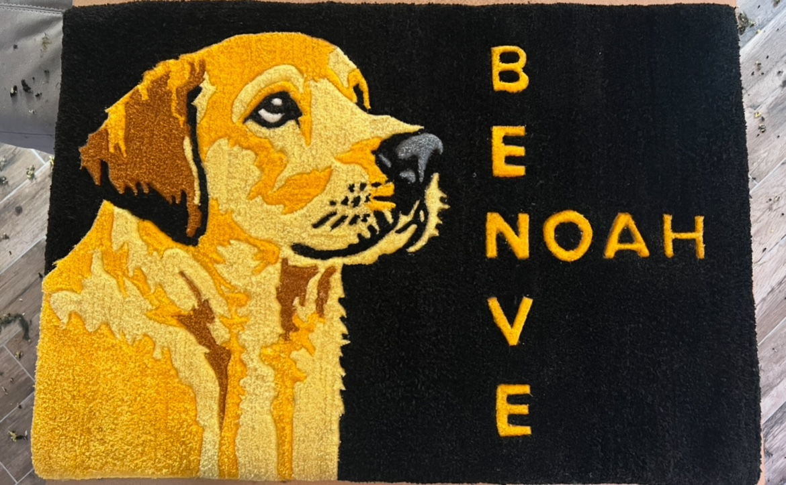
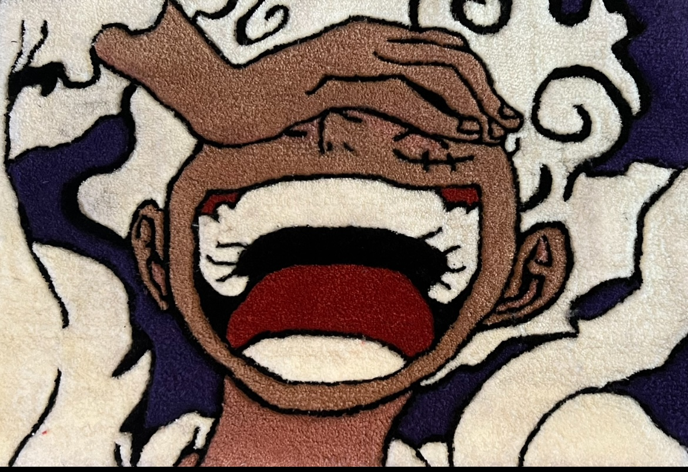

HANDMADE TUFTED RUGS
Idee da toccare.
Tappeti unici.
Il tufting è una passione che coltivo nel tempo libero, tra esperimenti, colori e idee personali. Qui raccolgo i lavori che realizzo e le ispirazioni che incontro lungo il percorso.
MADE
WITH CARE ✳
WITH CARE ✳
ISPIRAZIONI CONDIVISE
✳
FATTO A MANO, CON CALMA
✳
RICERCA VISIVA · IDEE APERTE
Un universo di
possibilità.
Una raccolta di lavori personali, esperimenti e ispirazioni: dai ritratti degli animali ai riferimenti anime e pop, fino alle idee per la casa.



Ogni lavoro nasce da un’idea e prende forma tra colori, materiali e sperimentazione.
OT
✳
✳
PIACERE, OUT TUFT
Ogni idea merita
la sua forma.
Out Tuft è il nome che ho dato al mio angolo creativo dedicato al tufting, una passione che coltivo nel tempo libero. Qui condivido i lavori che mi diverto a realizzare, le prove e le ispirazioni che incontro. Se hai un’idea o un riferimento che ti piacerebbe raccontarmi, scrivimi pure: ogni tanto, se il tempo e le energie lo permettono, mi fa piacere ragionare insieme su qualcosa di speciale.
SEGUI LA RICERCA SU INSTAGRAM ↗✳
TI VA DI FARE DUE CHIACCHIERE?
Hai un’idea?
Raccontamela.
Se ti incuriosisce un lavoro o vuoi condividere un’idea, puoi scrivermi su Instagram senza impegno. Il tufting per me è un hobby: non prendo richieste in modo continuativo, ma sarò felice di ascoltarvi.
SCRIVIMI SU INSTAGRAM ↗ NESSUNA FRETTA, SOLO CREATIVITÀ ✳